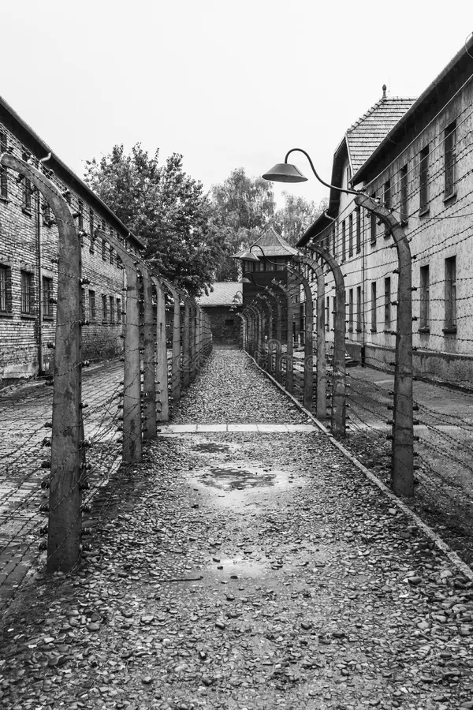

La fugue d'Auschwitz
Le temps passe. Presque trois ans. Une vérité devient impossible à ignorer : ici, nous avons appris, observé, transmis. Mais si nous voulons que le monde comprenne vraiment… nous devons sortir. Avec deux compagnons, nous préparons notre évasion. Chaque détail compte. Chaque erreur peut être fatale. Ce soir nous sommes le 26 avril 1943, il est temps de passer à l’action. Nous coupons les lignes. Nous profitons de l’obscurité. Nous fuyons. Après des jours de marche et de cachettes, nous retrouvons enfin la résistance. Mais la mission ne s’arrête pas. Elle continue ailleurs.
Retour en Pologne